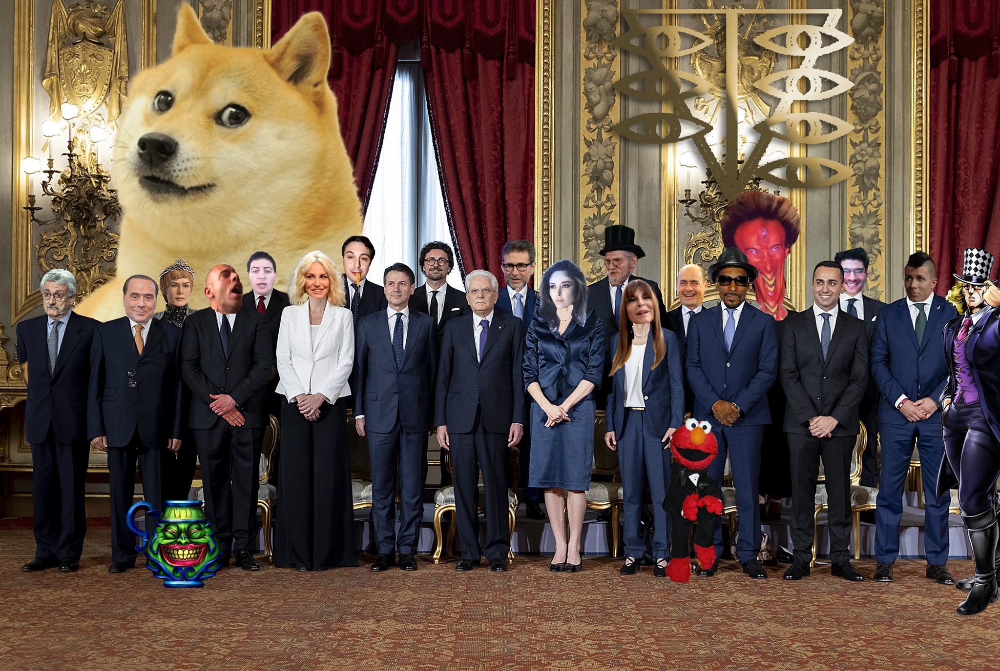

Can we lose this content forever?
Nocoldiz began his pooper career in 2009 with the video The Assault of the Mutant Chicks, inspired by American youtubers who belonged to the same video strand. The channel's success first came in 2012 with the videos The Supervillain Plan of Saruman and The Lord of Lords, based on the film saga The Lord of the Rings, and later in 2013 with The True Story of Harry Potter, about the film saga of the same name, spreading the catchphrase of Hagrid's character repeating over and over again "No, he's dead to me," "No, he's still around to me." The catchphrase is then repeated both in subsequent videos by the YouTuber and by some of his fellow poopers.1
But the video that peaks in viewership and secures him many of his current subscribers is a video riding on the success of the television series Game of Thrones, which achieves considerable success, blowing up on Facebook: one of the most famous scenes in the video features King Robert's character obsessively shouting "Wine!" This continuously repeated exclamation will become a real catchphrase among Game of Thrones viewers, even among those who have never seen the poop in question.
On September 30, 2019, after 10 years of operation, the channel was suspended from the platform for spam, scam, or misleading commercial content. On October 4, 2019, the suspension was upheld despite an appeal.2 This event likely occurred due to changes in Google AdSense policy that occurred on the same day as the suspension. At the time of the suspension, the channel had 312,000 subscribers.
Years later, the pooper has still not received a response from a human YouTube manager regarding the reason for the ban, but only from automatic BOTs. Now Nocoldiz has reopened an archive channel but has moved to other platforms.
Source 1 ↗
Source 2 ↗